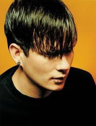

| Home
Tom Delonge: (lahir 13 Desember 1975; umur 34 tahun ) adalah seorang musisi yang
berasal dari Amerika Serikat dan juga seorang gitaris/vokalis untuk grup musik Blink-182
selama tahun 1992-2005.Setelah keluar dari Blink-182, ia membentuk grup musik Angels &
Airwaves bersama mantan anggota Hazen Street, 30 Seconds To Mars, The Offspring dan Rocket
From the Crypt.Tom adalah anak kedua dari tiga bersaudara. Kakak tirinya bernama Shon Kitchen
dan adiknya bernama Kari. Ibunya bernama Connie.Tom dibesarkan oleh kedua orangtuanya
di Poway, California. |
| copyright © irvanabdurrahman2010 |
|